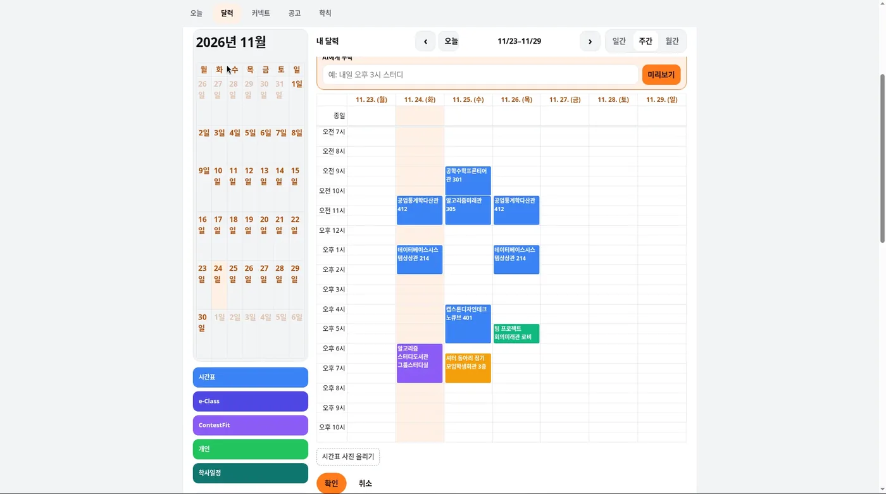
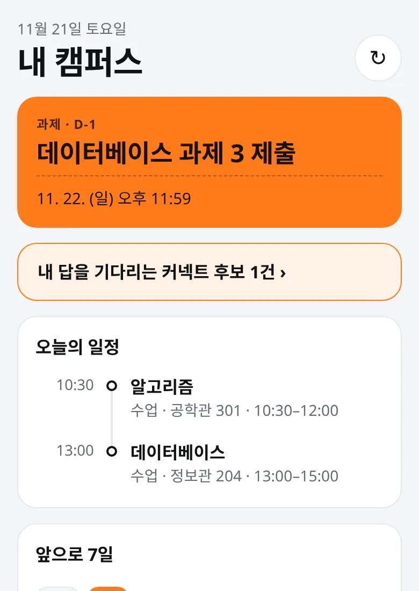
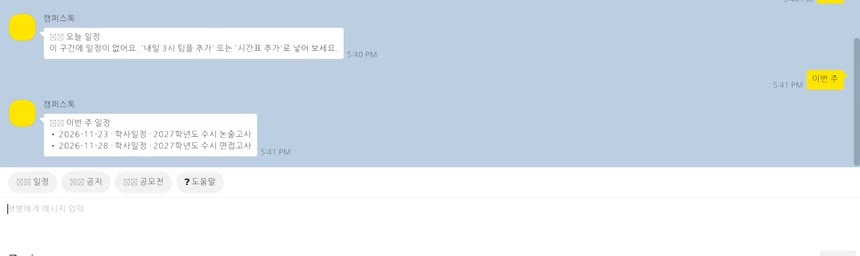
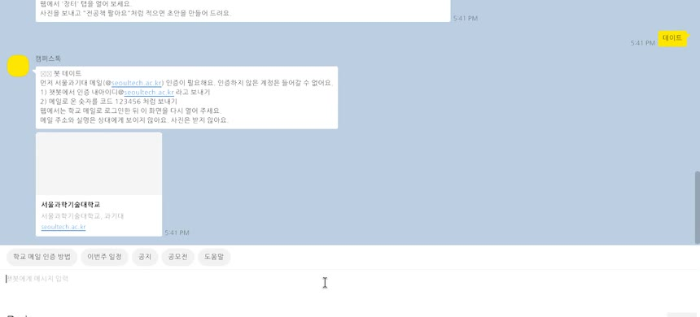
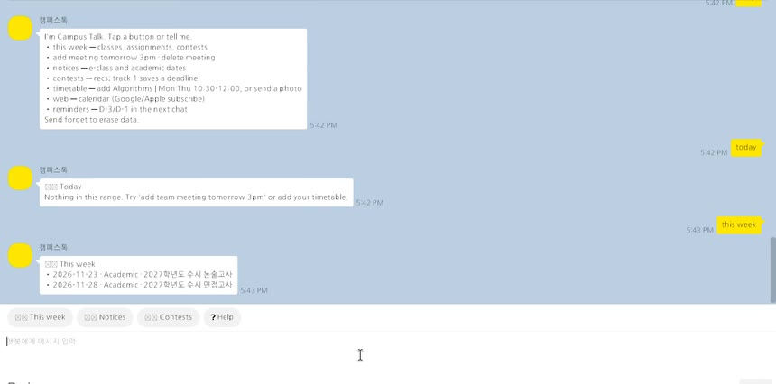
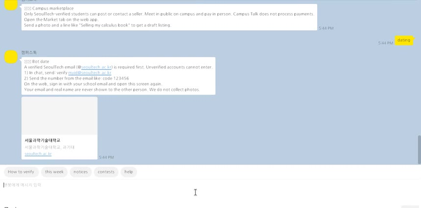

1. 시간표 사진을 올려 확인해요
주간 시간표 사진을 올리면 수업 시간과 강의실을 읽어요. 확인한 뒤에만 저장돼요. 테스트 사진 5장에서는 칸 정보 52/60개(약 87%)를 맞게 읽었습니다. 항상 그 비율이 나온다고 보장하지는 않아요.
서울과학기술대학교
시간표부터 학사 일정, 공지와 공모전까지 챗봇과 웹에서 바로 보는 캠퍼스 도우미예요.
데모 계정으로 만든 예시입니다. 시간표는 확인한 뒤에만 저장됩니다.




캠퍼스톡 채널에 짧게 보내면 챗봇이 바로 답해요. 실제 카카오톡 화면을 핵심만 잘라 만든 데모입니다.








PC로 녹화한 화면이라 이모지가 작은 네모로 보일 수 있어요. 휴대폰 카카오톡에서는 정상으로 보여요.
주간 시간표 사진을 올리면 수업 시간과 강의실을 읽어요. 확인한 뒤에만 저장돼요. 테스트 사진 5장에서는 칸 정보 52/60개(약 87%)를 맞게 읽었습니다. 항상 그 비율이 나온다고 보장하지는 않아요.
일·주·월로 보고, 말로 일정을 부탁하면 미리보기를 확인한 뒤에 저장돼요.
수업, 마감, 학교 공지, 공모전을 한 화면에서 확인해요.
주간 시간표 사진을 올리면 수업 시간과 강의실을 읽어요. 확인한 뒤에만 저장돼요. 테스트 사진 5장에서는 칸 정보 52/60개(약 87%)를 맞게 읽었습니다. 항상 그 비율이 나온다고 보장하지는 않아요.
일·주·월로 보고, 끌어 옮기거나 길이를 바꿀 수 있어요. AI에게 부탁하면 미리보기를 확인한 뒤에 저장돼요. 구글·애플 캘린더는 구독 주소로 볼 수 있어요.
여러분이 공유한 e-class 공지와 캠퍼스 소식을 한 화면에서 모아 봐요. 서버가 대신 e-class에 로그인하지는 않아요.
내 조건에 맞는 공고를 골라 보여 주고, 일정에 담을 수 있어요.
오늘 수업과 마감을 웹과 채팅에서 직접 모아 볼 수 있어요.
스터디 상대를 찾고, 오늘 해야 할 일을 확인할 수 있어요. 연락처는 서로 승인한 뒤에만 보여요.
같은 학교 학생끼리 과외를 찾고 연결할 수 있어요. 둘러보기는 로그인 없이 가능하고, 글을 올리거나 연락하려면 학교 메일(@seoultech.ac.kr) 인증과 만 19세 이상이 필요해요. 캠퍼스에서 직접 만나고, Campus Talk이 결제를 받거나 보관하지는 않아요. 초기 베타입니다.
교재와 캠퍼스 물건을 사고팔 수 있어요. 게스트도 글을 둘러볼 수 있고, 글을 올리거나 연락하려면 학교 메일(@seoultech.ac.kr) 인증과 만 19세 이상이 필요해요. 캠퍼스 안 공공장소에서 직접 만나 거래하세요. Campus Talk은 결제를 받거나 보관하지 않아요. 사진으로 판매글 초안을 만들 수 있어요. 초기 베타입니다.
학교 메일 인증, 만 19세 이상 자기 확인, 참여 동의가 필요해요. 사진은 받지 않아요. 연락 방법은 서로 승인한 뒤에만 열려요. 신고·차단·삭제를 할 수 있어요. 초기 베타입니다.
카카오톡 채널 캠퍼스톡에서 바로 대화를 시작할 수 있어요. 디스코드와 웹 앱도 열려 있어요.
텔레그램은 곧 출시예요. 지금은 디스코드와 웹 앱에서 학교 메일(@seoultech.ac.kr)로 시작할 수 있어요.
봇이 먼저 보내 주는 아침 브리핑을 준비하고 있어요. 아래는 데모 계정으로 만든 예시예요. 지금은 결제 창이 없고, 웹과 채팅에서 오늘 수업과 마감을 직접 볼 수 있어요.
오늘 수업과 마감을 채팅이나 웹에서 바로 확인할 수 있어요.